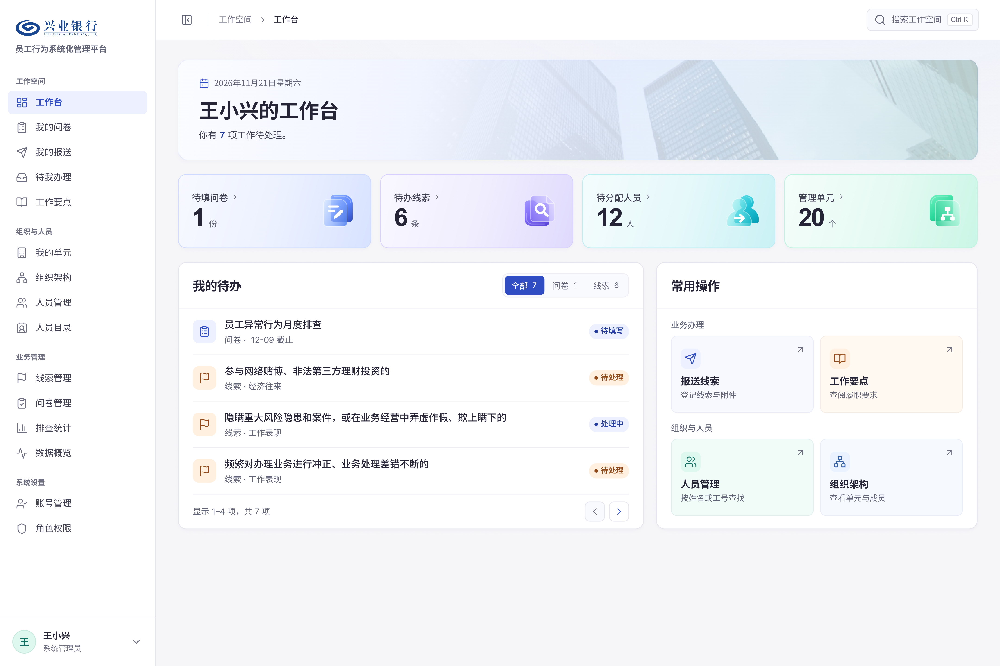
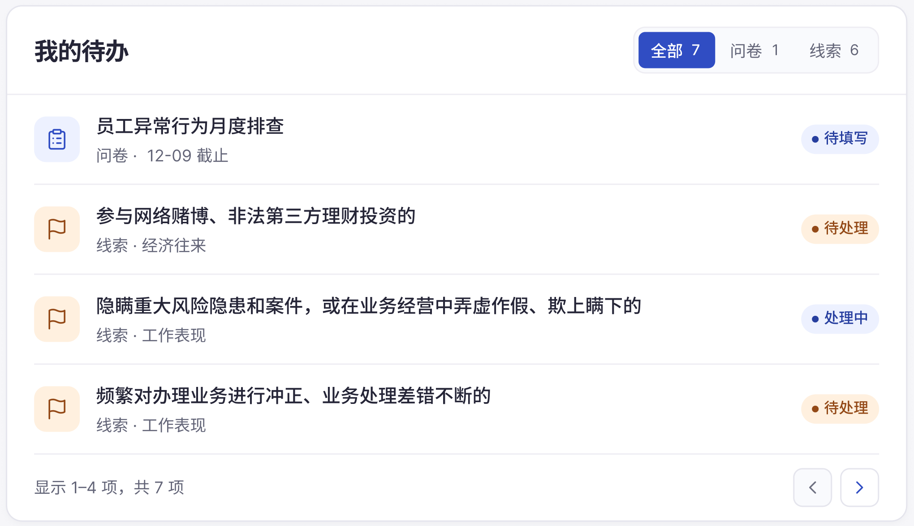
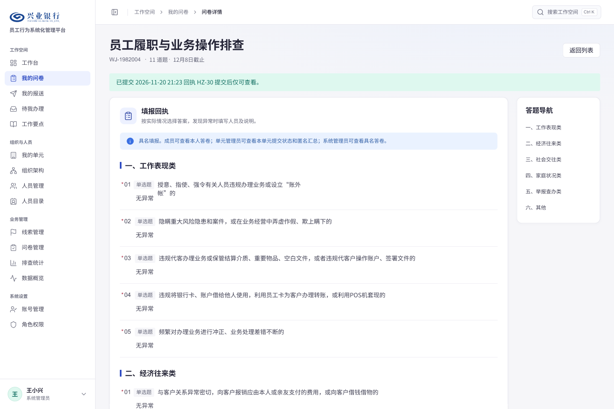
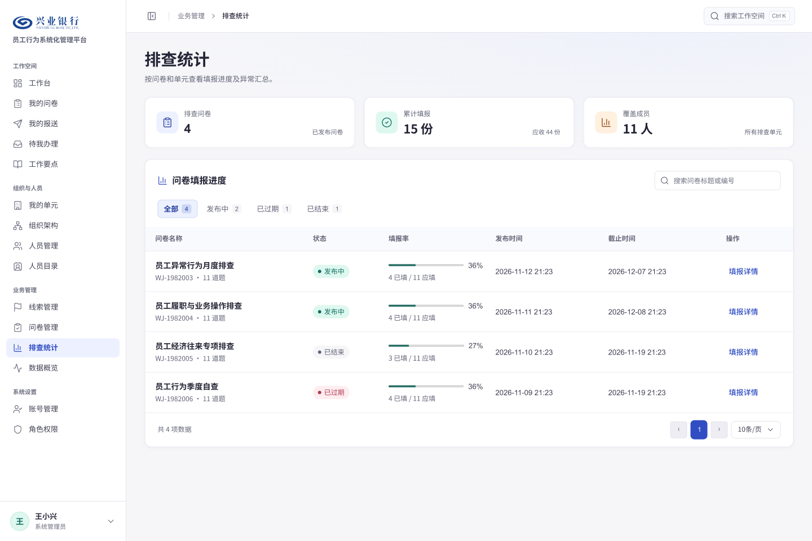
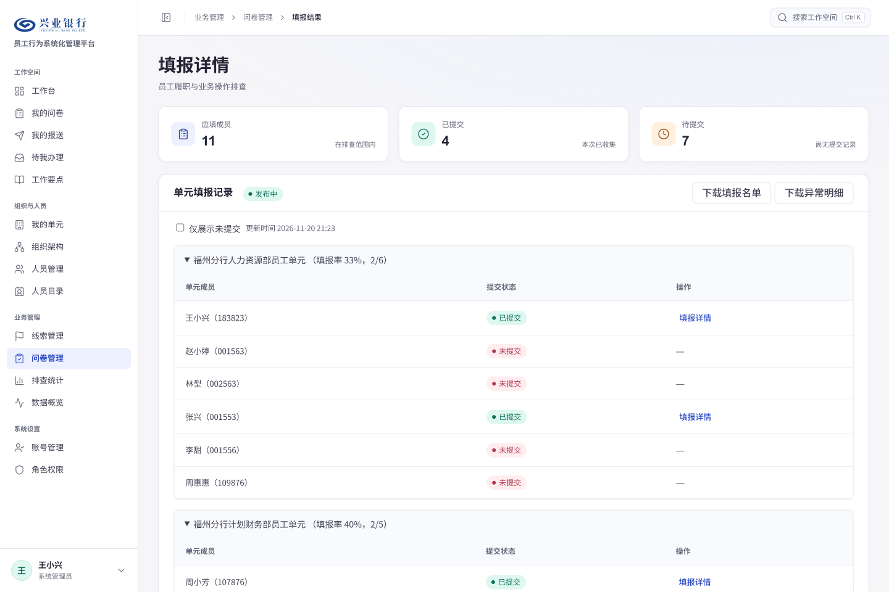

返回时接上原来的待办
我让工作台按角色记住待办分类和页码。上一条线索仍待处理时，经办人可以点「继续办理」直接打开它。
兴业银行 · 人力资源管理系统 V1.0 至 V2.0
我负责工作台与问卷排查的交互设计，让经办人能接着办上一条线索，让管理员能从填报进度找到要提醒的人。


我让工作台按角色记住待办分类和页码。上一条线索仍待处理时，经办人可以点「继续办理」直接打开它。
我为员工保留可核对的提交回执，把管理员看到的填报率连到成员名单。勾选「仅展示未提交」后，名单仍按单元分组。

我用两版原型重走同一条线索。新版直接回到第 2 页，省去了重选「线索」和翻页。
在示例问卷中，系统管理员能按名单跟进人力资源部 4 人、计划财务部 3 人。单元管理员只看本单元。

